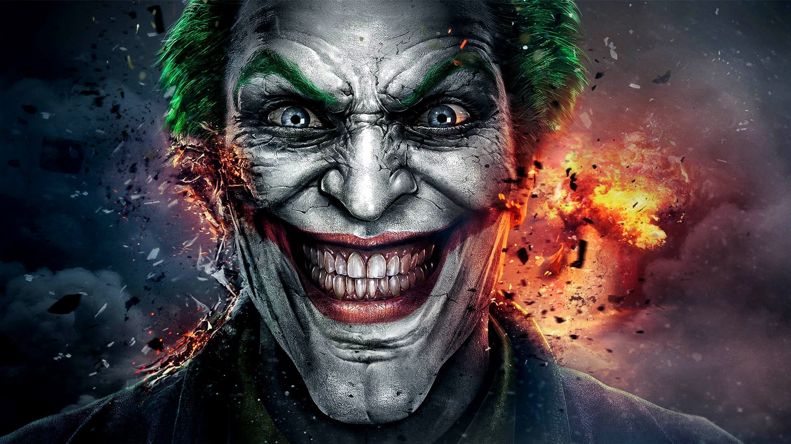

About the Joker
The joker is a bad guy who kills people with his wife, Harley Quinn. The jokers enemy is a big man called batman who is also know as bruce wainn.
Ralph and his friends
#- He's a murder
- He is feared by alot of people
- Not many people like him
Joker's Enemies
The Joker has a lot of enemies but one of his biggest enemies is a man called batman! Click on the links to read more about them: